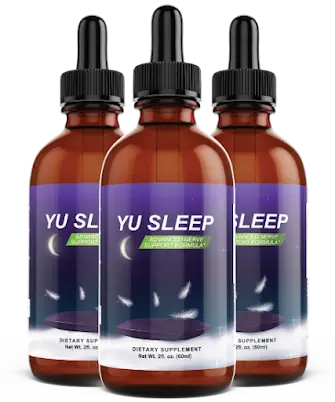

Yu Sleep Liquid – 30-Day Supply, Natural Nighttime Sleep Support.
Yu Sleep is a liquid sleep support supplement created for adults in the USA who want to support better nighttime relaxation, healthy sleep quality, and a more balanced bedtime routine. It provides daily support for people looking to unwind after busy days, encourage restful sleep, and wake up feeling refreshed. With its convenient liquid format, Yu Sleep fits easily into an evening wellness routine without adding complexity to your daily habits.
Yu Sleep is made for individuals seeking natural sleep support, relaxation support, and healthy sleep cycle support as part of their overall wellness lifestyle. It helps promote a calm nighttime experience while supporting the body’s natural sleep rhythm. Whether occasional rest challenges or a busy lifestyle affect your evening routine, Yu Sleep offers a simple way to support peaceful nights, improved rest, and refreshed mornings with consistent daily use.
| Detail | Value |
|---|---|
| Supply Per Bottle | 30 days |
| Supplement Type | Liquid dietary supplement |
| Sleep Support | Restful sleep and relaxation |
| Nighttime Focus | Sleep cycle and evening calm |
| Suitable For | Adults |
| Wellness Support | Healthy bedtime routine |
Use Yu Sleep by following the serving instructions provided on the product label. Taking the recommended amount consistently as part of your evening routine can help create a regular bedtime habit. Many users prefer adding it to their nighttime schedule at a similar time each day for a simple and convenient sleep wellness routine.
Yu Sleep works best when combined with healthy sleep habits, including maintaining a consistent bedtime, creating a comfortable sleep environment, reducing late-night distractions, and following a relaxing evening routine. Individual experiences may vary depending on lifestyle habits, stress levels, sleep schedules, and daily routines.
Yu Sleep is intended for adult use and should be taken only as directed on the product label. Do not use more than the recommended serving amount. Stop use if any unwanted effects occur and consult a qualified healthcare professional when needed.
Individuals who are pregnant, nursing, under 18, managing health concerns, or currently using prescription medications should seek professional advice before adding Yu Sleep to their wellness routine. Always read the product instructions carefully and use supplements responsibly.
Yu Sleep comes with a 60-day money-back policy. Customers should review the official purchase terms, return requirements, and refund conditions before placing an order. This policy allows customers time to experience Yu Sleep as part of their regular nighttime wellness routine and decide if it matches their personal sleep support needs.
What is Yu Sleep?
Yu Sleep is a liquid sleep support supplement created for adults in the USA who want to support restful nights, relaxation, and healthy sleep habits. It helps complement a consistent bedtime routine by supporting the body’s natural sleep cycle. Yu Sleep offers a convenient way to include nighttime wellness support as part of a balanced daily lifestyle.
How does Yu Sleep work?
Yu Sleep works by supporting the body’s natural processes involved in relaxation and healthy sleep patterns. Its blend of sleep-support nutrients and calming components helps encourage a peaceful transition into bedtime. When combined with healthy sleep habits, Yu Sleep can support a more comfortable nighttime routine and help users maintain consistent rest.
How should I take Yu Sleep?
Yu Sleep should be taken according to the serving instructions provided on the product label. Many users add it to their evening routine at a similar time each night to maintain consistency. Following a regular bedtime schedule, limiting distractions, and creating a relaxing environment may further support a healthy sleep routine.
Who can use Yu Sleep?
Yu Sleep is intended for adults who want to support relaxation, healthy sleep quality, and nighttime wellness. It may be suitable for people looking to improve their bedtime habits and support restful sleep. Individuals under 18, pregnant or nursing individuals, and those taking medications should consult a healthcare professional before use.
What are the benefits of using Yu Sleep?
Yu Sleep supports several areas of nighttime wellness, including relaxation, healthy sleep patterns, and a refreshed morning feeling. It helps promote a calming bedtime experience and supports a balanced sleep routine. Regular use along with healthy lifestyle habits may help adults maintain better sleep quality and overall daily wellness.
Is Yu Sleep a liquid sleep supplement?
Yes, Yu Sleep comes in a convenient liquid format that makes it easy to include in a nightly routine. The liquid form provides a simple alternative for adults who prefer not to use traditional capsules. It can be added to an evening wellness schedule as part of a consistent approach to sleep support.
Does Yu Sleep support the natural sleep cycle?
Yu Sleep supports the body’s natural sleep-wake cycle by providing nutrients commonly used in nighttime wellness products. A healthy sleep cycle depends on regular habits, relaxation, and consistent routines. Yu Sleep can complement these practices by supporting a calm evening routine and encouraging a more balanced approach to restful sleep.
How long does it take to notice results with Yu Sleep?
Individual experiences with Yu Sleep may vary depending on lifestyle, sleep habits, stress levels, and daily routines. Some people may notice changes sooner, while others may need consistent use as part of their bedtime routine. Maintaining healthy sleep habits alongside Yu Sleep can support better nighttime wellness over time.
Where can I buy Yu Sleep in the USA?
The recommended place to purchase Yu Sleep is through the official website. Ordering from the official source helps customers receive authentic products, access available package options, and get current purchase information. Buyers can review pricing details, shipping options, and customer support information directly before placing an order.
Is Yu Sleep safe for daily use?
Yu Sleep is intended for adults and should be used according to the instructions provided on the product label. Before adding any supplement to your routine, review the usage directions carefully. People with health conditions or those using prescription medications should consult a healthcare professional before starting Yu Sleep.